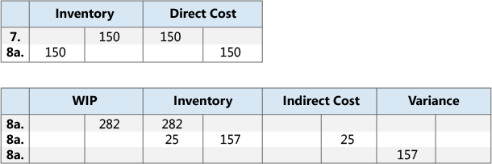
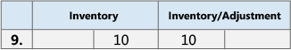

Designdetails: Abgleich mit der Finanzbuchhaltung
Wenn Sie Lagertransaktionen buchen, z. B. Verkaufslieferungen, Einkaufsrechnungen, Fertigprodukte aus der Produktion oder Abgängen, werden die Mengen- und die Wertänderungen des Lagerbestandes in den Artikelposten bzw. in den Wertposten festgehalten. Verkaufslieferungen, Einkaufsrechnungen, Fertigprodukte aus der Produktion oder Abgänge, werden die Mengen- und die Wertänderungen des Lagerbestandes in den Artikelposten bzw. in den Wertposten festgehalten.
Es gibt zwei Möglichkeiten, Inventurposten mit der Finanzbuchhaltung abzustimmen:
- Manuell, indem die Stapelverarbeitung Lagerreg. buchen ausgeführt wird.
- Automatisch, bei jeder Buchung einer Lagertransaktion.
Buchen der Stapelverarbeitung "Lagerregulierung buchen"
Wenn Sie diesen Lagerreg. buchen Batchauftrag ausführen, werden auf Basis der Wertposten allgemeine Hauptbuchungsposten erstellt. Sie können Sachposten für die einzelnen Wertposten summieren oder Sachposten für jede Kombination aus Buchungsdatum, Lagerortcode, Lagerbuchungsgruppe, Geschäftsbuchungsgruppe und Produktbuchungsgruppe erstellen.
Die Buchungsdaten der Sachposten werden auf das Buchungsdatum des entsprechenden Wertpostens gesetzt, außer wenn der Wertposten in eine geschlossene Buchhaltungsperiode fällt. In diesem Fall wird der Wertposten übersprungen, und Sie müssen entweder die Finanzbuchhaltung-Einrichtung oder die Benutzereinrichtung ändern, um Buchungen in dem Datumsbereich zu ermöglichen.
Während Sie die Stapelverarbeitung Lagerreg. buchen ausführen, könnten Sie auf Fehler treffen, die ihre Ursache in fehlender Einrichtung oder nicht kompatibler Dimensionseinrichtung haben. Wenn die Stapelverarbeitung auf Fehler in der Dimensionseinrichtung stößt, setzt sie diese Fehler außer Kraft und verwendet die Dimensionen des Wertpostens. Bei anderen Fehlern überspringt die Stapelverarbeitung das Buchen der Wertposten und listet die Fehler am Ende des Berichts im Abschnitt Übersprungene Artikelauf. Um diese Artikel buchen zu können, müssen Sie zunächst die Fehler beheben. Wenn Sie eine Liste der Fehler anzeigen möchten, bevor Sie die Stapelverarbeitung Lagerreg. buchen ausführen, führen Sie den Bericht Lagereinstandspreise buchen - Test aus. In dem Testbericht werden alle Fehler aufgelistet, die während der Testbuchung aufgetreten sind. Sie können die Fehler dann beheben und die Stapelverarbeitung zum Buchen der Lagerregulierung ausführen, ohne dass Posten übersprungen werden.
Automatische Kostenbuchung
Um einzurichten, dass Kostenbuchung in der Finanzbuchhaltung automatisch ausgeführt wird, wenn Sie eine Lagertransaktion buchen, wählen Sie das Kosten automatisch buchen-Kontrollkästchen auf der Seite Bestand einrichten aus. Das Buchungsdatum des Sachpostens ist das gleiche wie das Buchungsdatum des Artikelpostens.
Kontoarten
Während der Abstimmung werden Bestandswerte zum Bestandskonto auf der Bilanz gebucht. Der gleiche Betrag, aber mit umgekehrtem Vorzeichen, wird in das entsprechende Gegenkonto gebucht. Normalerweise ist das Gegenkonto ein GuV-Konto. Wenn Sie direkte Kosten im Zusammenhang mit Verbrauch oder Ausgabe buchen, ist das Gegenkonto jedoch ein Bilanzkonto. Die Art des Artikelpostens und des Wertpostens bestimmt, auf welches Sachkonto gebucht wird.
Die Postenart gibt an, in welches Sachkonto die Buchung vorgenommen werden soll. Dieses wird entweder durch das Vorzeichen der Menge im Artikelposten oder der bewerteten Menge im Wertposten bestimmt, da die Mengen immer das gleiche Vorzeichen haben. Beispielsweise beschreibt ein Verkaufsposten mit einer positiven Menge eine Bestandsabnahme durch einen Verkauf, und ein Verkaufsposten mit negativer Menge beschreibt eine Bestandszunahme durch eine Verkaufsreklamation.
Beispiel
Das folgende Beispiel zeigt eine Fahrradkette, die aus eingekauften Gliedern gefertigt ist. In diesem Beispiel wird gezeigt, wie die verschiedenen Sachkontoarten in einem typischen Szenario verwendet werden.
Das Kontrollkästchen Erwartete Soll-Kosten, die auf der Seite Lager-Einrichtung ausgewählt ist und die folgenden Einstellungen werden festgelegt.
Die nachstehende Tabelle zeigt, wie das Glied auf der Artikelkarte eingerichtet wird.
| Feld einrichten | Wert |
|---|---|
| Lagerabgangsmethode | Standard |
| Einstandspreis (fest) | MW 1,00 |
| Gemeinkostensatz | MW 0,02 |
Die nachstehende Tabelle zeigt, wie die Kette auf der Artikelkarte eingerichtet wird.
| Feld einrichten | Wert |
|---|---|
| Lagerabgangsmethode | Standard |
| Einstandspreis (fest) | MW 150,00 |
| Gemeinkostensatz | MW 25,00 |
Die nachstehende Tabelle zeigt, wie der Arbeitsplatz auf der Arbeitsplatzkarte eingerichtet wird.
| Feld einrichten | Wert |
|---|---|
| EK-Preis | MW 2,00 |
| Neue indirekte Kosten in Prozent | 10 |
Szenario
- Die Benutzer kauft 150 Glieder und bucht die Einkaufsbestellung als erhalten. (Einkauf)
Der Benutzer bucht die Einkaufsbestellung als fakturiert. Dies erstellt einen zuzuordnenden Gemeinkostenbetrag von MW, 3,00 und einen Abweichungsbetrag MW 18,00. (Einkauf)
- Die Interimskonten werden gelöscht. (Einkauf)
- Die direkten Kosten werden gebucht. (Einkauf)
- Die indirekten Kosten werden berechnet und gebucht. (Einkauf)
- Die Einkaufsabweichung wird berechnet und gebucht (nur für Standardkostenartikel). (Einkauf)
- Die Benutzer verkauft eine Kette und bucht den Verkaufsauftrag als geliefert. (Verkauf)
Der Benutzer bucht die Verkaufsbestellung als fakturiert. (Verkauf)
- Die Interimskonten werden gelöscht. (Verkauf)
Kosten der verkauften Waren (COGS) werden gebucht. (Verkauf)

Der Benutzer bucht einen Verbrauch von 150 Gliedern, der die Anzahl der Links ist, die verwendet werden, um eine Kette herzustellen. (Materialverbrauch)

Diese Arbeitsplatzgruppe brauchte 60 Minuten, um die Kette herzustellen. Der Benutzer bucht die Verarbeitungskosten. (Verbrauch, Kapazität)
- Die direkten Kosten werden gebucht. (Verbrauch, Kapazität)
Die indirekten Kosten werden berechnet und gebucht. (Verbrauch, Kapazität)
- Der Benutzer bucht die Soll-Kosten einer Kette. (Istmeldung)
Der Benutzer beendet den Fertigungsauftrag und führt die Stapelverarbeitung Kostenanpassung Artikeleinträge aus. (Istmeldung)
- Die Interimskonten werden gelöscht. (Istmeldung)
- Die direkten Kosten werden vom WIP-Konto zum Bestandskonto übertragen. (Istmeldung)
- Die indirekten Kosten (Gemeinkosten) werden vom Konto für indirekte Kosten zum Bestandskonto übertragen. (Istmeldung)
Dadurch ergibt sich ein Abweichungsbetrag von MW 157,00. Abweichungen werden nur für Standardkosntenartikel berechnet. (Istmeldung)

Hinweis
Der Einfachheit halber wird nur ein Abweichungskonto angezeigt. Real existieren fünf verschiedene Konten:
- Materialabweichung
- Kapazitätsabweichung
- Abweichung Kapazitätsgemeinkosten
- Fremdarbeitskostenabweichung
- Prod.-Gemeinkostenabw.
Der Benutzer bewertet die Kette um von MW 150,00 auf MW 140,00. (Regulierung/Neubewertung/Rundung/Umlagerung)

Weitere Informationen über das Verhältnis zwischen den Kontotypen und den verschiedenen Arten von Wertposten finden Sie unter Designdetails. Konten in der Finanzbuchhaltung
Siehe auch
Designdetails: Lagerkostenberechnung
Designdetails: Soll-Kosten-Buchen
Designdetails: Kostenregulierung
Verwalten der Lagerregulierung
Finanzen
Arbeiten mit Business Central
Kostenlose E-Learning-Module für Business Central finden Sie hier